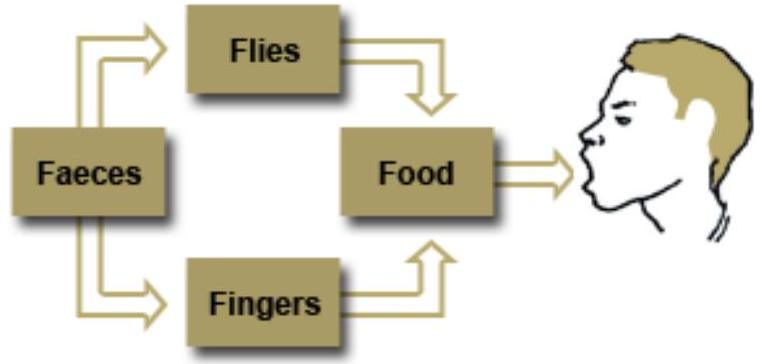
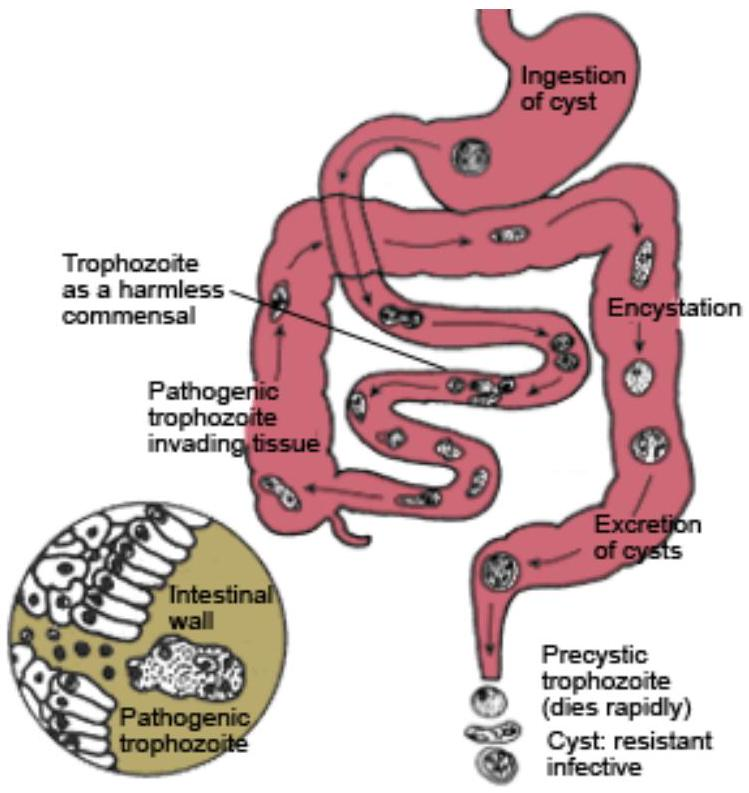

SECTION 5: DISEASES CAUSED BY FAECAL-ORAL CONTAMINATION (Part 2)
Bacillary Dysentery (Shigellosis)
Bacillary dysentery, also known as shigellosis, is an acute bacterial disease of the intestines. It is common especially in areas where the standards of hygiene are low, particularly, where there is scarcity of safe water, improper human excreta disposal, large population of flies and child malnutrition. Once again humans are the only known reservoir.
It is caused by a non-motile gram-negative bacilli of the genus shigella spp. The organisms responsible for outbreaks are:
- Shigella sonnei
- Shigella dysenteriae
- Shigella flexneri
- Shigella boydii
However, the first three organisms are the most common causes of outbreaks.
Mode of Transmission
The mode of transmission of the disease is the faecal-oral route. The organisms are transmitted directly through flies or contaminated hands. Indirect transmission may also occur through dishes which are poorly washed. The shigella multiply in food which when ingested causes dysentery.
Clinical Features
The disease has a short incubation period of one to four days. The onset is sudden with fever, headache, diarrhoea with streaks of blood, and colicky abdominal pains.
After a few motions (usually in a few hours) diarrhoea stops and is followed by severe colicky abdominal pain known as dysenteric syndrome, and painful contractions of the sphincter ani which produce an irresistible urge to defecate (tenesmus). When the patient goes to the toilet they pass small amounts of purulent mucus and blood. Vomiting may also occur. Toxins produced by the shigella on the wall of the colon may be absorbed into the blood stream resulting in toxaemia. Toxaemia causes high fever and rapid pulse. Dehydration is also common and dangerous as it may cause muscular cramps, oliguria and shock. In infants, rectal prolapse may occur as well as convulsions.
The 4 F Connection
Diagnosis
The following laboratory examinations are undertaken:
- Stool examination which shows the presence of blood and mucus
- Stool microscopy which shows presence of large numbers of white blood cells and erythrocytes
- Stool culture for shigella spp.
Management
Mild bacillary dysentery is self-limiting and all it requires is prevention or treatment of dehydration. However, in the case of severe infection, you will need to combine rehydration with antibiotics as follows:
- Antibiotics: oral ciprofloxacin 500 mg 12 hourly for five to seven days
- Analgesics for colic such as codeine phosphate and loperamide, belladonna, or paracetamol
- Rehydration due to diarrhoea and fluid loss. Oral rehydration using ORS in water is always useful as an aid to parenteral rehydration. It also carries less danger of disturbing electrolyte balance. However, intravenous fluid should be given to the very ill who cannot take anything orally.
Prevention and Control
The prevention and control of bacillary dysentery depends on stopping the faecal-oral transmission through the following ways:
- Safe water supply
- Improvement in personal hygiene
- Digging and use of pit latrines
- Practising food hygiene
- Giving health education that emphasises environmental hygiene and breastfeeding
- Inspection of public eating places, markets, boarding schools and camps
Giardiasis
This is an infection of the small intestines by protozoa called giardia lamblia. The disease may be mild (asymptomatic) in some individuals, while in others it may cause diarrhoea, malabsorption of digested nutrients and weight loss.
Giardiasis is found in all the countries of the world, but it is more common in developing countries such as Kenya, where the water supply may be contaminated by human faeces or sewerage.
Mode of Transmission
Often, the disease is spread from person to person, especially within families by asymptomatic carriers. Cysts which are excreted in the stool of an infected person remain infectious for up to three months in cold water or four days if the temperature is $37^{\circ}\text{C}$. As soon as the cysts are ingested by a human being, they are activated by the hydrochloric acid in the stomach. Trophozoites emerge and adhere to the wall of the upper portion of the small intestine. Here they begin to multiply and in about 10-14 days, the symptoms manifest.
Clinical Features
Acute giardiasis is characterised by sudden onset of nausea, loss of appetite, abdominal distension (bloating sensation), prominent bowel sounds, and diarrhoea with frequent, frothy, yellowish stools with offensive odour. Fatigue, lethargy and weight loss often occur.
After about three weeks the symptoms reduce in severity and for many of the patients, this is the beginning of spontaneous recovery. Some patients however, remain symptomatic and continue to lose weight because of ongoing malabsorption of nutrients, mostly fat, vitamin B12 and lactose. The disease may persist for months or years
Diagnosis
Diagnosis of giardiasis is often difficult to establish because stool examination rarely reveals motile trophozoites. However, approximately $60\%$ of samples will show cysts. The diagnosis is therefore made through the following ways:
- Stool microscopy to show cysts (three separate stool specimens should be collected to increase sensitivity of the test)
- Serology (giardia antigens can be detected in stools) immunological test
Management
Any one of the following three alternative treatments is effective enough to clear the infection:
- Oral tinidazole $50 \text{ mg/kg}$ body weight single dose
- Oral metronidazole 2 g single dose. Repeat the dose after ten days to increase the cure rate
- Oral metronidazole 250 mg eight hourly for seven days
Prevention and Control
The cysts of giardia lamblia are not affected by chlorine treatment of water or by iodine. However, they are highly susceptible to heat, therefore, the following preventive measures are important:
- Cooking food and boiling drinking water to kill the cysts
- Advise people to avoid eating raw salads, ice cream, unpeeled fruit and ice cubes in endemic areas
- Use of sand filters is also effective in protecting water from giardia cysts
- Tracing and treatment of healthy human carriers
Amoebiasis
This is a protozoal infection mainly of the intestinal mucous membrane in humans caused by entamoeba histolytica. The disease is found in all parts of the world but more common where sanitary conditions are poor. Amoebiasis can occur in families or spread through institutions but usually does not occur in epidemics. It can be endemic in a population in which many individuals are asymptomatic cyst-passers with only a few getting the disease.
Mode of Transmission
Cysts are passed from person to person by the faecal-oral route, by fingers soiled with faeces either directly into the mouth or via food. Infections may also occur from drinking contaminated water. Amoebiasis can occasionally spread from the bowels to other organs of the body, especially to the liver leading to amoebic liver disease.
Pathogenesis
Once the cysts are ingested, the emerging trophozoites take up residence in the intestinal mucosa.
The organisms multiply in the mucosa (causing the formation of bottle-shaped ulcers each $1-2 \text{ cm}$ in diameter). Too many such ulcers may cover the large intestine. Some of the ulcers may become perforated leading to severe peritonitis with shock. In the small intestines, the entamoeba histolytica may pass through the mucous membrane and enter the liver. After a variable incubation period a liver abscess may form.
Clinical Features
The signs and symptoms of amoebiasis include:
- Colicky abdominal pain
- Watery foul smelling diarrhoea containing blood-streaked mucus
- There may be a hard large tender abdominal mass (amoebic)
Diagnosis
This is reached by doing a stool microscopy for cysts of entamoeba histolytica.
Management
No treatment is necessary for asymptomatic patients as in time they clear the infection. However, for invasive disease either one of the following treatments is effective:
- Oral metronidazole 800 mg eight hourly for five to seven days
- Oral diloxamide furoate 500 mg eight hourly for ten days
In hepatic amoebiasis, oral metronidazole is very effective.
A three day course of $1.4 \text{ g}-2.4 \text{ g}$ a day will treat the disease.
Extra-intestinal Amoebic Disease
The most common site for extra-intestinal amoebiasis is the liver where it forms a liver abscess. Other secondary sites include lungs and skin leading to:
- Amoebic infection of the skin
- Amoebic balanitis
- Amoebic lung abscess
- Amoebic brain abscess
Prevention and Control
Who is responsible for the spread of amoebic dysentery?
It is the cysts-passers who are usually asymptomatic. Therefore in order to prevent and control this disease, you need to do the following:
- Advise people to boil drinking water (chlorination does not kill the cysts)
- Search for and treat carriers among food handlers
- Commence a campaign for more latrines in an area with endemic amoebiasis
- Conduct community campaigns about good personal hygiene practices, such as regular hand washing
Bacterial Food Poisoning
Food poisoning is a sudden, acute and sometimes life threatening illness which follows ingestion of contaminated food, drink or water. The major causes of food poisoning include intoxication with chemicals, toxins produced by bacterial growth, and a variety of organic substances such as poisonous plants and mushrooms. Food poisoning occurs in small outbreaks and mortality is usually low. In this country, you often hear of severe cases of food poisoning caused by consumption of cheap alcoholic drinks ('Kumi Kumi'). It is also suspected that some cases diagnosed as gastroenteritis in health facilities are actually caused by food poisoning.
There are two common types of bacterial food poisoning found in communities.
These are:
- Staphylococcal food poisoning
- Clostridium botulinum food poisoning
Staphylococcal Food Poisoning
This type of poisoning is caused by contamination of food (for example, with pus from a septic finger) by an infected person). The staphylococci in the pus multiply and produce toxins when the food is allowed to stand for several hours before being served. Although the bacteria itself is harmless if ingested, the toxins it produces are very poisonous. Following ingestion of the toxin-contaminated food, there is sudden severe abdominal cramping, nausea, vomiting, diarrhoea, headache and excessive salivation.
Diagnosis
This disease is usually recognised when people who have shared food all fall sick within a short time.
Clostridium Botulinum Food Poisoning
Botulinum poisoning occurs when food contaminated with botulinum spores (from the soil) is kept warm and in tightly covered containers for many hours. The organisms multiply in warm anaerobic (low oxygen) environments especially in protein-rich foods.
When such food is contaminated, clostridium botulinum multiplies and starts producing toxins. The contaminated food may appear spoiled (greenish) and emit an offensive odour. Once a person eats this food, they may suffer a mild illness that requires no medical treatment or a rapidly fatal illness terminating in death within 24 hours.
The symptoms of botulism begin to manifest 12-36 hours after ingestion of toxin contaminated food. The patient presents with the following signs and symptoms:
- Nausea and vomiting
- Dizziness and tinnitus
- Seeing double images (diplopia)
- Inability to speak clearly (dysphasia)
- Difficulty swallowing (dysphagia)
- Difficulty breathing (dyspnoea)
- Muscle weakness (neck, limbs, respiratory)
- Death may occur from sudden respiratory paralysis and airway obstruction
Diagnosis
Diagnosis is difficult when only one person is affected because the signs of botulism are similar to those of acute polio, myasthenia gravis and Guillain-Barre syndrome. However, diagnosis can be made when a group of people who had consumed the same food (especially tinned or canned foods) suffers from the same neurological symptoms without mental confusion or loss of awareness.
Management
The main cause of death in botulism is respiratory failure.
The patient therefore must be managed in a high-dependence unit.
A tracheostomy is performed and mechanical respirator used. Cleansing enemas are administered to remove unabsorbed toxin from the colon and botulinum autotoxin serum is given and repeated after two to four hours.
Prevention and Control
What points would you emphasise when giving a health education talk on prevention of bacterial food poisoning?
Your list should include the following preventative measures:
- Health education to encourage people to serve meals immediately they are prepared in order to prevent growth of organisms, such as staphylococci
- Keeping food covered to keep off dust and rodents
- Thorough reheating of left over foods (to kill toxins food must be heated to over $140^{\circ}\text{C}$)
- Excluding persons with skin infections from food handling
- Refrigerating cooked food
- Keeping the kitchen and cooling areas clean